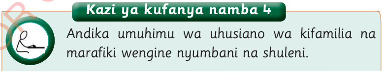

Umuhimu wa uhusiano wa familia na marafiki

Kazi ya kufanya namba 4
Andika umuhimu wa uhusiano wa kifamilia na marafiki wengine nyumbani na shuleni.
Uhusiano ni muhimu katika maisha ya binadamu.
Katika familia, uhusiano:
(a) Husaidia kujenga msingi imara wa upendo, maelewano, na kupata msaada kutoka kwa ndugu wa karibu; na